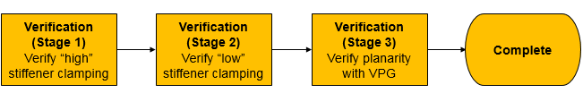

By following the instructions in this section you verify the proper operation of the
wafer prober following the completion of phase 2 of the installation.
About this task
The figure shows the stages making up Phase 2 of the installation verification process for
the bridge beam.

Before you begin
Installation of the V93000 Direct Probe Bridge Beam on the prober must be completed.
Adjustment of the Automated Probe Card Changer (APCC) tray must be complete per V93000
Direct Probe requirements (see V93000 Direct Probe Bridge Beam Theory of
Operation for details). The APCC tray carries the load
board stiffener.
Tools:
High CAM Follower Stiffener Fixture (high stiffener)